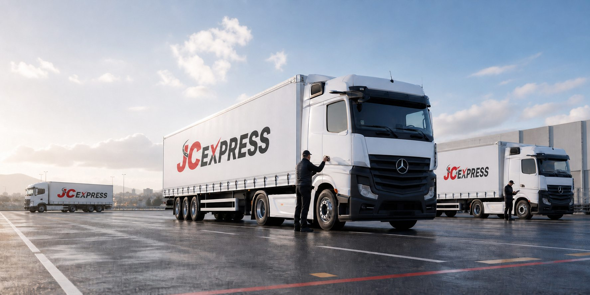

Petits volumes et accès contraints
Pour une livraison rapide, un lot dédié ou une intervention urbaine nécessitant davantage de maniabilité.
Lots professionnels
Une réponse dimensionnée au volume, aux accès et au délai pour vos flux en Île-de-France et partout en France.
Le besoin réel
JC EXPRESS accompagne les entreprises pour le transport de marchandises générales, palettes, lots dédiés et volumes professionnels. Chaque demande commence par une vérification du poids, des dimensions, du conditionnement et des conditions de manutention.
Cette préparation permet d'orienter la mission vers un VL Ford, un Renault Master, un porteur MAN, un tracteur Mercedes ou une semi-remorque. Les exigences particulières doivent être signalées dès la demande afin de confirmer la faisabilité.
Le véhicule n'est pas choisi sur une simple habitude : il dépend de la marchandise, du site et du niveau d'urgence.
Pour une livraison rapide, un lot dédié ou une intervention urbaine nécessitant davantage de maniabilité.
Pour concilier capacité, accès au site et organisation de chargement sur une mission régionale ou nationale.
Pour les marchandises compatibles avec un ensemble tracteur et semi-remorque et des accès adaptés au chargement.

Préparation
Un devis précis dépend de données simples mais essentielles. Plus elles sont complètes, plus la réponse sur le véhicule, le délai et l'organisation peut être fiable.
Dessertes
Départs ou livraisons depuis Noisy-le-Grand et la Seine-Saint-Denis vers Paris, l'Île-de-France ou une autre région.
Missions vers Gonesse, le Val-d'Oise et le bassin de Roissy, avec prise en compte des accès et des créneaux.
Trajets ponctuels, rotations ou tournées préparés selon les contraintes urbaines et logistiques.
Lots dédiés et volumes adaptés aux porteurs, tracteurs et semi-remorques pour des destinations nationales.
Questions fréquentes
L'entreprise étudie les marchandises générales, palettes et lots professionnels. La nature exacte, le conditionnement et toute contrainte particulière doivent être communiqués pour confirmer la compatibilité.
Le choix dépend du volume, du poids, des accès et du mode de chargement. JC EXPRESS vous oriente après réception des informations de la mission.
Oui, sous réserve de disponibilité. Appelez directement l'équipe en précisant le lieu de départ, la destination, le volume et l'heure souhaitée.
Votre marchandise
Quelques informations suffisent pour commencer : adresses, date, poids, dimensions, nombre de colis ou de palettes et contraintes d'accès.